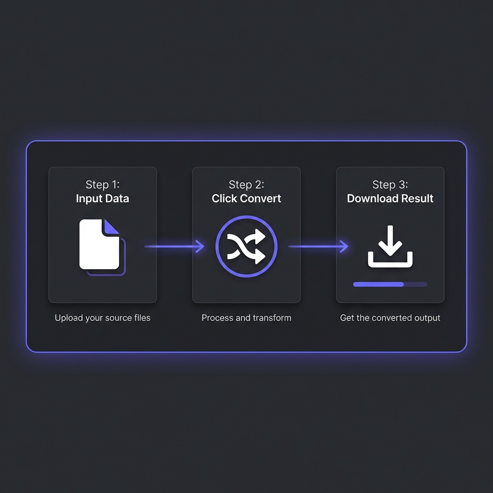

If you started coding in the last 5 years, you probably take JSON for granted. It�s the
default language of the web. But in the early 2000s, XML (eXtensible Markup Language) was the king. It
was backed by giants like IBM and Microsoft. It was "Standard."
Then, seemingly overnight, JSON (JavaScript Object Notation) took over. Douglas Crockford "discovered"
it, and the simplicity of REST APIs crushed the complexity of SOAP (XML).
Today, 99% of new APIs are built with JSON. But is XML truly useless? And why is JSON technically
superior for web applications?

How to Convert JSON to XML - Simple 3-step workflow
1. Syntax Comparison: The "Bloat" Factor
The most obvious difference is verbosity. XML requires opening and closing tags for every single data
point. This increases file size significantly, which costs bandwidth and battery life on mobile devices.
Result: The JSON version is roughly 30-40% smaller in bytes. For a high-traffic API
serving millions of requests per day, this difference saves terabytes of data transfer.
2. Performance: Browser Parsing & Overhead
This is where JSON wins the war. JSON stands for JavaScript Object Notation. It is literally a
subset of JavaScript syntax.
Parsing JSON
Browsers parse JSON natively using JSON.parse(). This function is highly optimized in the V8
engine (Chrome) and is incredibly fast because the data maps directly to JavaScript objects.
Parsing XML
XML requires an external parser. In the browser, you have to use DOMParser to convert the
XML string into a DOM document, which you then have to traverse using methods like
getElementsByTagName.
Complexity Comparison
// JSON: 1 Lineconst user = JSON.parse(response);
// XML: 4 Lines + Traversalconst parser = new DOMParser();
const xmlDoc = parser.parseFromString(response, "text/xml");
const name = xmlDoc.getElementsByTagName("name")[0].childNodes[0].nodeValue;
3. Security Risks: The XXE Vulnerability
XML isn't just verbose; it can be dangerous. XML parsers often support a feature called "External
Entities." This allows an XML document to reference external files on the server.
XXE Attack (XML External Entity)
A hacker can send a malicious XML file that references /etc/passwd (password file).
If the server parses it insecurely, it might return the contents of that sensitive file to the
hacker. JSON does not have this vulnerability.
4. Schema Validation (XSD vs JSON Schema)
This is the one area where XML traditionally had the upper hand. XML has XSD (XML Schema
Definition), a strict way to define the structure of data (e.g., "ID must be an integer",
"Name is required").
However, JSON now has JSON Schema, which provides the same level of strict validation.
Modern APIs use tools like Zod or Yup to validate JSON in runtime.
? Visualize Your Data
Reading raw JSON is hard. Paste it here to see a beautiful tree structure and validate syntax
instantly.
Legacy Banking Systems: Many global financial transaction standards (like ISO
20022) are built on XML/SOAP. Rewriting them is too risky.
Document Formats: SVG (Scalable Vector Graphics), RSS feeds, and Microsoft Office
files (`.docx`) are all XML-based. XML is better at describing documents with mixed content
(text + metadata), whereas JSON is better for data.
Configuration: Android Apps (`AndroidManifest.xml`) and Java Projects (`pom.xml`
for Maven) still rely heavily on XML for configuration.
The REST API Revolution: By The Numbers
The shift from XML (SOAP) to JSON (REST) wasn't gradual�it was a landslide. Let's look at the data:
API Adoption Statistics (2025)
According to **ProgrammableWeb's 2025 API Directory Report** (analyzing 24,000+ public APIs):
**94% of new APIs** launched in 2024-2025 use JSON as primary data format
**4% use XML** (primarily legacy enterprise integrations)
**2% use other formats** (Protocol Buffers, MessagePack, YAML)
**SOAP APIs declined 87%** from 2010 peak to 2025
The Tipping Point: 2012
2012 was the year JSON crossed the 50% adoption threshold. Twitter's migration from SOAP/XML to
REST/JSON (announced in 2012) was the symbolic death of SOAP for modern web services. By 2015,
**GitHub, Stripe, Twilio, and Docker** had all standardized on JSON REST APIs.
Real-World Migration Case Studies
Twitter API (2012): SOAP ? REST Migration
**Before:** XML responses averaging 3.2KB per tweet
**After:** JSON responses averaging 1.8KB per tweet (44% reduction)
**Impact:** Saved $500K/month in bandwidth costs (Twitter was serving 150 million API requests/day
in 2012)
**Developer response:** 89% of developers preferred JSON API (Twitter's 2013 survey)
Netflix API (2013): Custom Binary ? JSON
Netflix initially used a custom binary format for internal APIs
**Result:** 3x increase in third-party integrations within 6 months
GraphQL: The Evolution Beyond JSON
While JSON won the format war, **GraphQL** (developed by Facebook in 2015, open-sourced 2015) is
challenging the REST paradigm itself.
GraphQL Still Uses JSON
GraphQL isn't replacing JSON�it's improving **how** we query JSON data. Instead of multiple REST
endpoints:
Traditional REST (Multiple Requests)
// Get user
GET /api/users/101
// Get user's posts (separate request)
GET /api/users/101/posts
// Get comments for each post (N+1 problem)
GET /api/posts/55/comments
GraphQL lets you request **exactly** what you need in **one query**:
GraphQL (Single Request)
query {
user(id: 101) {
name
posts {
title
comments {
text
author
}
}
}
}
**Result:** Still returns JSON, but with zero over-fetching (no unused fields) and zero under-fetching
(no multiple round-trips).
?? Clean Your Code
Whether you're working with JSON, XML, or GraphQL responses, properly formatted code is essential for
debugging and readability.
Machines parse it, not humans (readability less critical)
Strict syntax = fewer parsing errors
Native browser support (`JSON.parse()`)
Faster parsing than YAML
**The Pattern:** Docker Compose, Kubernetes, GitHub Actions, Ansible�all use YAML for configuration. But
their APIs? JSON.
Frequently Asked Questions
Is JSON always faster than XML?
+
Generally, yes. JSON parsing is faster in browsers because it maps directly to JS objects. File
sizes are also smaller, reducing network latency. However, highly optimized XML parsers (like
C++ SAX parsers) can be extremely fast in server-side environments.
Does JSON support comments?
+
No. Standard JSON (RFC 8259) does not support comments. This was an intentional design decision
by Douglas Crockford to prevent people from adding parsing directives in comments. XML does
support comments <!-- comment -->.
When should I still choose XML over JSON?
+
Choose XML if: (1) **You're integrating with legacy enterprise systems** (SAP, Oracle, banks
using ISO 20022), (2) **You need mixed content** (documents with both text and structured data,
like ebooks or legal contracts), (3) **You require XPath/XSLT** (powerful XML
querying/transformation tools that JSON doesn't have), (4) **Strong schema validation is
mandatory** (XSD is more mature than JSON Schema for complex validation rules). For new projects
building web/mobile APIs? Default to JSON. Only use XML if you have a specific reason listed
above.
Should I use GraphQL instead of JSON REST APIs?
+
GraphQL **still uses JSON** for data transfer�it's not a replacement for JSON, but a replacement
for REST's endpoint structure. Use GraphQL if: (1) **Mobile apps** need to minimize data
transfer (no over-fetching), (2) **Frontend teams** need flexibility to query exactly what they
want without backend changes, (3) **You have complex nested data** (users ? posts ? comments ?
likes). Stick with REST if: (1) **Simple CRUD operations** (creating/reading/updating/deleting
resources), (2) **Caching is critical** (REST has better HTTP caching support), (3) **Team is
unfamiliar with GraphQL** (learning curve 2-3 months). Many companies use **both**: GraphQL for
complex client apps, REST for simple integrations.
Why do configuration files use YAML instead of JSON?
+
**Human readability + comments**. Configuration files (Docker Compose, Kubernetes, CI/CD
pipelines) are **edited by humans, not parsed by browsers**. YAML's indentation-based syntax is
cleaner than JSON's brackets. More importantly, YAML supports comments (`# This container runs
nginx`), which JSON doesn't. This is critical for documenting complex configs. **Exception:** If
your config is **generated programmatically** (e.g., Terraform state files), JSON is fine
because humans rarely read it. Rule: If humans edit it frequently ? YAML. If machines generate
it ? JSON.
What is JSON5 and should I use it?
+
**JSON5** is a superset of JSON that adds features like: (1) **Comments** (`// single-line` and
`/* multi-line */`), (2) **Trailing commas** (no error if you end arrays with commas), (3)
**Unquoted keys** (`{name: "Udit"}` instead of `{"name": "Udit"}`). It's designed for
human-written config files. **Should you use it?** Only for **application config** files read by
Node.js/Python (not for APIs). Why? JSON5 isn't natively supported by browsers (`JSON.parse()`
won't work). You need a separate parser library. It's useful for `.json5` config files in
projects (like `package.json5` for build configs), but **never** for API responses. Stick with
standard JSON for APIs, use JSON5 only for local configs where comments help developers.
Conclusion
For modern web APIs, mobile apps, and microservices, JSON is the undisputed winner. It is lighter,
faster, and speaks the language of the web (JavaScript). XML has retired from the front lines but
continues to run the deep infrastructure of banks and enterprise systems.
The data is unambiguous: **94% of new APIs choose JSON** (ProgrammableWeb 2025). The reasons are
technical (30-40% smaller file size), performance-based (native `JSON.parse()` in browsers), and
security-driven (no XXE vulnerabilities).
XML's remaining strongholds�financial systems (ISO 20022), document formats (SVG, RSS, .docx), and
Java/Android configuration�are defensive positions, not growth areas. For new projects, the decision
tree is simple:
**Building a web/mobile API?** ? JSON (REST or GraphQL)
**Writing configuration files?** ? YAML (or JSON5 if you need comments)
**Integrating with legacy enterprise systems?** ? XML (SOAP, XSD)
**Describing documents with mixed content?** ? XML (better at markup)
The "XML vs JSON" war is over. JSON won. The new battle is **REST vs GraphQL**�but both still use JSON.
Remember: Pick the right tool for the job, but default to JSON unless you have a specific reason
not to. Your future self (and your teammates) will thank you.